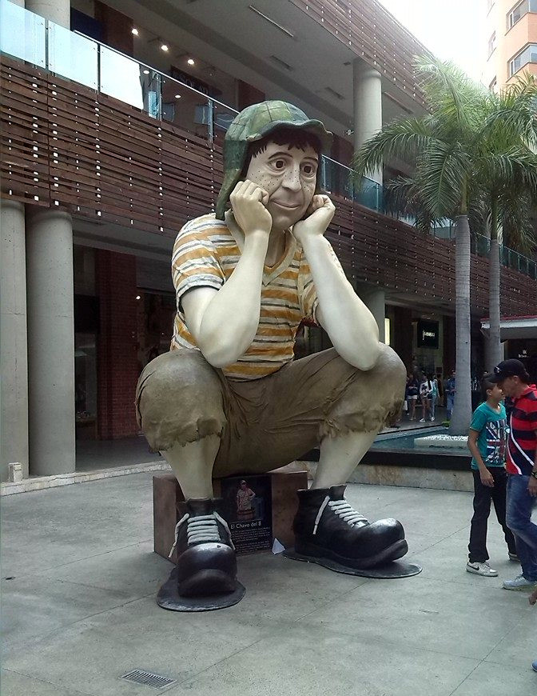

El Chavo

Es un niño huérfano de 8 años de edad. Generalmente se esconde en un barril, pero él asegura vivir en el departamento N.º 8.

Es un niño huérfano de 8 años de edad. Generalmente se esconde en un barril, pero él asegura vivir en el departamento N.º 8.
Es la hija de Don Ramón y mejor amiga del Chavo y Quico.
Es el hijo de Doña Florinda y mejor amigo del Chavo y la Chilindrina.
Si querés saber más sobre nuestro amigo del barril, podés encontrar más información en la página principal.